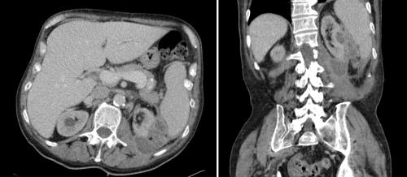

You are here: Urology Textbook > Kidneys > Renal abscess
Renal Abscess
Review literature: (Angel et al, 2003) (Shu et al, 2004).
Definition of a Renal Abscess
A renal abscess is a collection of pus within the kidney. The kidney infection may extend into the retroperitoneum.
Etiology of Renal Abscess
Gram-negative Bacteria:
A renal abscess is most common caused by gram-negative bacteria such as E. coli and Proteus. Ascending urinary tract infections (pyelonephritis), tubular obstruction and nephrolithiasis are common risk factors for a renal abscess. Perinephric abscess may result from the rupture of a renal abscess with cortical location.
Staphylococci:
Before the antibiotic era, renal abscesses were often caused by the hematogenous spread of staphylococci. Today's risk groups for hematogenous spread of staphylococci: intravenous drug abuse, intensive care, dialysis patients, valvular heart disease and endocarditis.
.Signs and Symptoms of a Renal Abscess
- Fever and chills
- Flank pain or abdominal pain
- Weight loss, malaise
- Urosepsis
Kidney Abscess: Diagnostic Work-Up
Urine culture:
Urine culture can often isolate the responsible bacteria and is needed for antibiotic resistance testing.
Laboratory tests:
Blood culture (positive in 50%). Blood count, coagulation tests (PTT, PT), CRP, liver enzymes, creatinine. In suspected urosepsis, determination of sepsis parameters such as blood gas testing, procalcitonin, AT III and fibrinogen.
Ultrasonography:
Sonographic signs for a renal abscess in renal ultrasound are a hypoechoic mass within the renal capsule, which may have inclusion of air (echogenic reflex with dorsal shadowing). Doppler sonography may show increased blood flow at the margin of the renal abscess, whereas blood flow is often not visible in the center of the mass. CT should be initiated in case of abnormalities in the sonography.
Computed tomography:
CT is the diagnostic test of choice [fig. renal abscess]. The renal abscess appears as a hypodense area. Air inclusion is possible. After administration of contrast media, there is an ring-like enhancement of the abscess capsule.
|  |
Septated left-sided renal abscess and perinephric abscess with air inclusions. With kind permission of Dr. G. Antes, Kempten. |
Intravenous urography:
Intravenous urography has only historical value in suspected renal abscess and is now replaced by CT. If done, KUB x-ray may show an increased renal shadow and nephrolithiasis. The excretion of contrast media is often delayed with displacement of the pyelocalyceal system. Urography may be normal and may fail to diagnose renal abscess.
Treatment of a Renal Abscess
Cornerstones in the treatment of renal abscess are parenteral antibiotics and abscess drainage:
- Parenteral antibiotics: e.g. amoxicillin and clavulaic acid 2,2 g 1–1–1 i.v. in combination with gentamicin 3 mg/kg 1–0–0 i.v. Alternatives are third generation cephalosporins.
- Abscess drainage: in most cases, percutaneous drainage is sufficient. Pus is sent for identification of bacteria and antibiotic resistance testing. In advanced disease, surgical drainage is necessary. Nephrectomy is rarely necessary in a nonfunctioning kidney with persisting sepsis despite maximal therapy.
| Chronic pyelonephritis | Index | Perinephric abscess |
Index: 1–9 A B C D E F G H I J K L M N O P Q R S T U V W X Y Z
References
- Angel u.a. 2003 ANGEL, C. ; SHU, T. ; GREEN, J. ; ORIHUELA, E. ; RODRIQUEZ, G. ; HENDRICK, E.:
- Renal and peri-renal abscesses in children: proposed
physio-pathologic mechanisms and treatment algorithm.
In: Pediatr Surg Int
19 (2003), Nr. 1–2, S. 35–9
- Shu u.a. 2004 SHU, T. ; GREEN, J. M. ; ORIHUELA, E.:
- Renal and perirenal abscesses in patients with otherwise anatomically
normal urinary tracts.
In: J Urol
172 (2004), Nr. 1, S. 148–50
 Deutsche Version: Nierenabszess
Deutsche Version: Nierenabszess